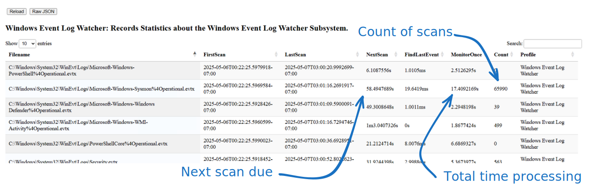
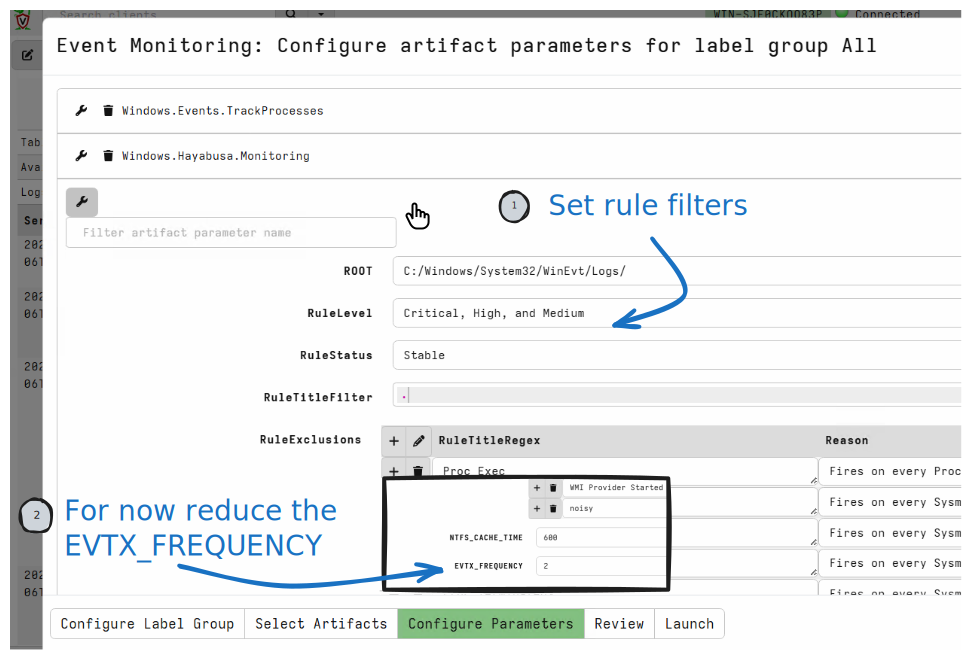
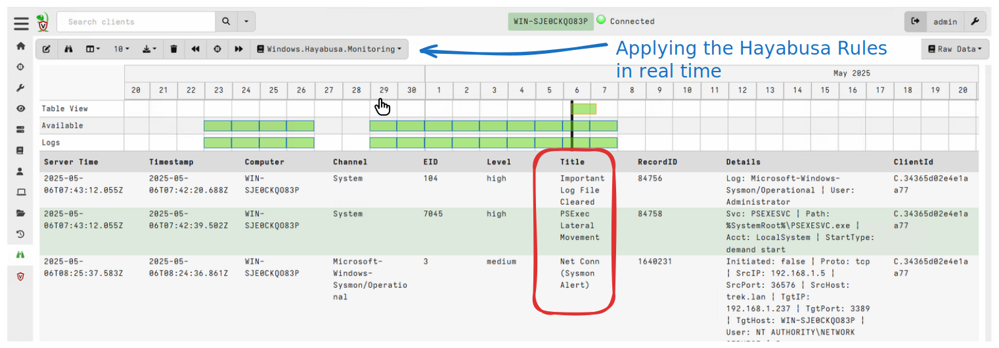

<!-- .slide: class="title" --> ## Live Detection ### Using Sigma Rules for real time detection --- <!-- .slide: class="full_screen_diagram small-font" --> ## Velociraptor client monitoring architecture <img src="client_events_arch.svg" style="height: 60vh"> --- <!-- .slide: class="content small-font" --> ## Live Detection * We have seen how we can filter events from the event log through Sigma rules * But we want to do it in real time! * Real time alerting is useful: * Report hits immediately * Captures critical information off the system * Resilient to tampering/removal. * Reduce response time --- <!-- .slide: class="content small-font" --> ## The Windows.Sigma.BaseEvents Model * This model is compatible with the Windows.Sigma.Base model * We still parse the on host event logs, but * We periodically check the log files for new events. * Only process those new events each cycle.  --- <!-- .slide: class="full_screen_diagram small-font" --> ## The Windows.Hayabusa.Monitoring artifact ### Enable collection of the artifact <img src="enabling_hayabusa_monitoring_1.svg" style="height: 60vh"> --- <!-- .slide: class="full_screen_diagram small-font" --> ## The Windows.Hayabusa.Monitoring artifact ### Selecting the Windows.Hayabusa.Monitoring artifact  --- <!-- .slide: class="full_screen_diagram small-font" --> ## The Windows.Hayabusa.Monitoring artifact ### Detecting attacks in real time 